かならずお読みください→
月ヶ瀬離床センサ 使い方
まず対象となる方をよく観察する必要があります．
ベッドから出るときに左右どちらから立ち上がるか？そのときベッド柵を抜くのかまたぐのか？ベッド柵を抜くときはどこの柵を抜き取るのか？またぐとしたらどこをまたぐのか？それら一連の動作にどのくらいの時間がかかるのか？床に下りたあとどこを通るのか？などです．
そして看護／介護上，どのタイミングで知らせれば，間に合うのかを考える必要があります．特に転倒の危険が懸念される場合には，ごく初期の段階で検知する必要があります．すなわち早めに検知されれば，駆けつけるまでの時間が稼げます．しかし逆にひんぱんに検知されることにもなります．この判断は，使用するナースコールシステムも含む看護／介護体制に係わる部分ですので，ここでは一概には言えません．この部分は各施設でご判断ください．
しかし，入院／転院して間もない場合，看護側にもこれらのことがらが十分に把握できません．また入院された方にとっても，環境の変化による不安から，いつもとは違う行動をとられることがよくあります．いうなる落ち着くまでが看護側にとっても不安材料となります．
当院では，このような場合，ナースステーション近くの病室を選び，看護師の巡回も頻回にするなどの対策をまず講じています．その上で，例えばどのベッド柵をはずしてベッドから出るかわからない場合は，月ヶ瀬離床センサをそれぞれの柵に設置して対応しています．入院された方もそして看護側も落ち着いてくると，必要に応じて減らしていきます．
このように，月ヶ瀬離床センサは，作って使えばそれで成果が出るものではありません．大切なのは使いこなすこと，道具として生かすことです．患者さんや看護する人によって使い方は様々で，工夫の余地はたくさんあるように思います．また，月ヶ瀬離床センサは離床を止める道具ではありません．離床を事前に知らせようとする道具です．この点を誤解がないように願います．
では当院での具体的な使用例を紹介します．
● ベッド柵を抜くとナースコールが鳴る
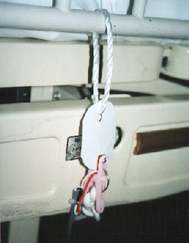
ベッド柵に取り付けたタグとベッドに取り付けた月ヶ瀬離床センサ
ベッドの柵を引き抜くとタグが外れ，ナースコールが鳴ります．この写真は，見やすくして撮影したものです．実際には，タグのひもを長くして，離床センサ本体はベッド下に隠れるようにしてベッド上から目が届かないようにします．上の写真のような付け方をするととても気になります．気になるとさわりたくなります．柵から身を乗り出します．これは危ないです．
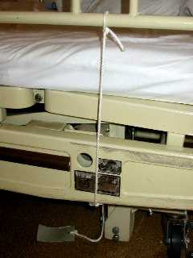 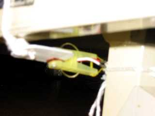
これが，現在最も確かと思われる取り付け方です．タグは柵の２本の足の真ん中につけます．またひものたるみは極力少なくし，柵を２センチ持ち上げればタグが外れるようにひもの長さを調整します．タグを柵の前端や後端につけるとタグが外れないように柵をはずすことが出来ます．ひものたるみが大きすぎても同じことがおきます．（当院で実例あり） また洗濯バサミ部分は，完全にベッドの下に隠れるようにします．こうすると看護師さんが取り外す際に不便ですが，安全性は高まるようです．
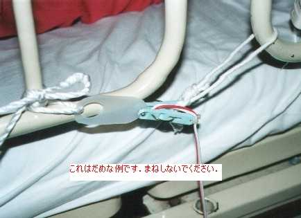
このように付ければ，前後の柵のいずれかを外してもナースコールが鳴って，効率的か？
と思ったら，だめでした．この状態では鳴らさないように柵をはずすことが出来ます．
絶対まねしないでください．人によっては，ベッド柵から下にのびているひも（タグがついている）が気になり，さわってナースコールを鳴らす方もおられます．そのようなときには，きれいな色のリボンなどを別の安全な場所につけると気が紛れる場合があります．
● 通路を通るとナースコールが鳴る
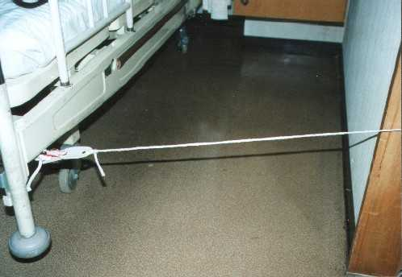
通路にひもを張りこれを横切るとナースコールが鳴る
立位，歩行に危険がないけれど，ベッドから離れすぎると自分では戻れない方にはこのように，通路にひもを張ります．この際，視力に応じたひもの種類や色の選択，歩行能力に応じたひもを張る高さに工夫が必要です．
上の写真は，撮影用に太く白いひもを使っていますが，このようなひもが目の前にあれば普通またごうとします．足元がおぼつかない方にとって危険な動作です．道具は使い方によって危険を増す場合もあるうることを忘れないでください．実際にはもっと細く，黒いひもを使いました．こうすると看護師さんが引っかからないように注意する必要もあります．● 着衣に付けて体動によってナースコールが鳴る
洗濯バサミで着衣をつまみ，一定の動作をするとナースコールが鳴るようにします．洗濯バサミを付ける位置や洗濯バサミに付けたひもの長さやひもの他端を付ける場所に工夫が必要です．
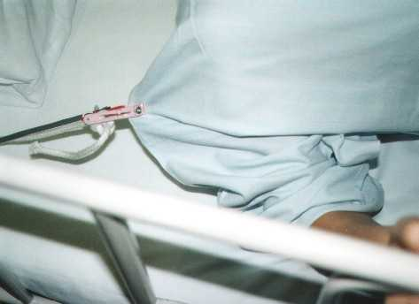
肩に付けた例．起きあがろうとするとナースコールが鳴る．
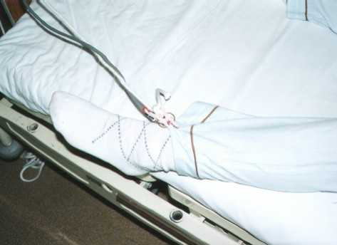
ズボンのすそに付けた例．ベッドの外に足を出そうとするナースコールが鳴る．
着衣につける方法は，一連の動作のごく初期に検知します．しかし人によっては，洗濯バサミが気になり，自分でつまんで外し，寝具などにはさんでナースコールが鳴らないようにする人もいます．この場合は，眠られてからそっと着衣に付けます．
また寝返りなどで鳴ってしまうこともあります．この場合，ひもの長さなどで調整しますが誤報も多いです．
ある病院では，手の動きが十分でないため，通常のナースコールスイッチボタンを押せない方の衣服（ズボン）に月ヶ瀬離床センサをつけて足の動きでナースコールを操作している例があるそうです．
このような使い方もできるのだと感心しました．
その病院から転院してきた患者さんに教えてもらいました．
（０４／１２／０３ 以上追記）
● ベッド降り口に障害物を置き，よかそうとするとナースコールが鳴る
ベッド柵を乗り越えようとする方には，柵に取り付ける方法は役に立ちません．また柵を乗り越えようとすること自体も非常に危険です．ベッド柵の高さに水平にひもを張ることも考えましたが，このひもをまたごうとすると，ひも自体が手がかりにならないため，柵を乗り越えるより危険と考えました．
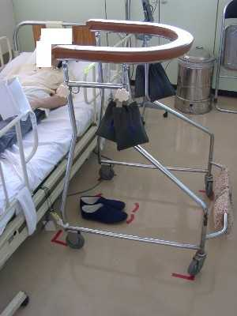
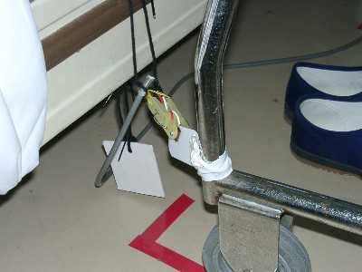
そこで，ベッド左側に出入り口を設定し，そこに普段使っている歩行器を置き，ベッドと歩行器の間に月ヶ瀬離床センサを設置しました．歩行器や履き物の置く位置も床面に表示しています．
歩行器を使ってベッドを離れようとした場合も，また歩行器を使わずにつたい歩きでベッドを離れる場合も身体が通るすきまを作るために歩行器をどかすとナースコールが鳴ります．● トイレを離れようとするとナースコールが鳴る目を離せない方の場合，トイレでさえ看護師さんがかたわらに付き添います．しかしこれは看護師さんにも負担ですし，何よりご本人にとって，好ましい状況とは言えません．
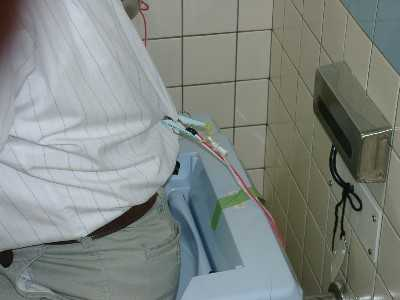
このように衣服の背中に月ヶ瀬離床センサをつけ，配管などとひもでつなぎます．ひもの長さを調整することで，便座から立ち上がろうとするとナースコールが鳴ります．この間，担当の看護師さんは，ドアの外で他の仕事ができます．
本来の取り組み
ここまで月ヶ瀬離床センサの使い方を説明してきました．この道具が威力を発揮するのは主に看護パワーが手薄になる夜間です．しかし本質的には，昼間は活動的に，夜間は静かに過ごしていただくのが基本です．この基本がまずあり，その及ばない部分を道具でカバーするのが本来あるべき姿だと考えます．しかし昼間ベッドで過ごすと，夜間はなかなか眠れなくなるのも事実です．
当院では，このため昼間の臥床時間を短くするいくつかの取り組みを行っています．説明する順番が逆ではありますが，次にこれらについて紹介します．● レクレーション（月曜日から金曜日．午後１１時から１１時半，午後３時４０分から午後４時）
ハンドベル，塗り絵，貼り絵，カレンダー作り，集団ゲームなど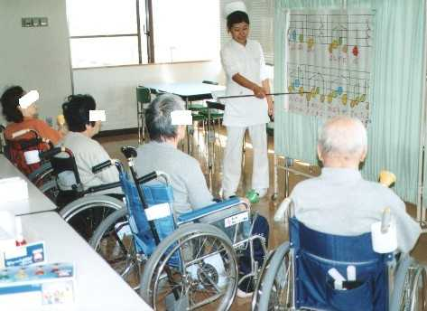
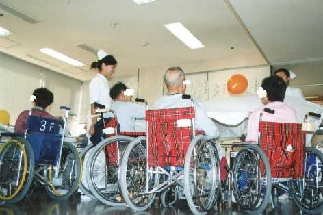
● のびのび体操 （毎日午後３時半から１０分間）
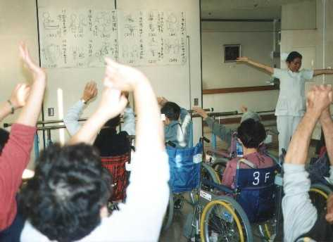
● 月ヶ瀬離床センサの限界
ある方に対して，ベッド柵に月ヶ瀬離床センサを取り付け，柵を外したらナースコールが鳴るように準備をしました．しかしこの方は，柵を抜かずに跨ごうとされることが多いことがわかりました．もちろんこの場合は離床を検知できませんし，柵があることで跨ぎ越そうとされているのならば，かえって危険を呼ぶことになります．今のところ，このような場合の対策として，車いすや歩行器などの障害物を置き，これらの移動を検知する方法を，多く採用していますが，これも万全ではないと思われます．これが限界かとも思いますが，この文章をお読みの方で，なにかよいアイデアがおありの方がおられましたら，お知らせいただければ幸いです．
追記（０３／０２／１３）テープスイッチ型離床センサによってこの問題は解決しました．
04/12/03 月ヶ瀬離床センサをナースコールとして使用する例について追記
03/05/15 公開